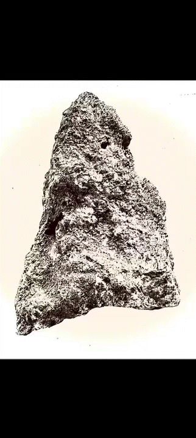

STONE TO STONE
"Stone to Stone" is a workshop that digitizes stone objects.
This workshop encourages participants to explore how to express and record objects in a digital environment using their unique visual language, seamlessly.

© JI-HO PARK